조경기사 (2020-06-06 기출문제)
1과목: 조경사
1. 영국의 공원 중 최초로 시민의 힘에 의해서 만들어진 공원은?
- 리젠트 파크(Regent Park)
- 그린 파크(Green Park)
- 하이드 파크(Hyde Park)
- 버컨헤드 파크(Birkenhead Park)
(정답률: 82%)

2. 중국의 청(淸)나라 때 조성된 이름난 정원은?
- 앵도원(櫻桃園)
- 평천장(平泉莊)
- 온천궁(溫泉宮)
- 이화원(頤和园)
(정답률: 82%)
3. 고대 로마시대의 정원인 호르투스(hortus)의 초기 구성 요소가 아닌 것은?
- 약초밭
- 분수
- 과수원
- 채전
(정답률: 73%)
4. 고려시대 정원조영의 특징으로 가장 부적합한 것은?
- 격구장을 축조하였다.
- 별서정원(別墅庭園)이 유행하였다.
- 곡연(曲宴)을 위한 대사누각(臺射樓閣)이 지어졌다.
- 송나라의 정원을 모방하여 호화롭고 이국적인 화원이 만들어졌다.
(정답률: 63%)
5. 다음 정원에 관한 설명에 적합한 일본시대는?
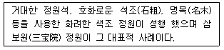
- 실정(室明:무로마치)
- 도산(桃山:모모야마)
- 강호(江戶:에도)
- 겸창(鎌倉:가마쿠라)
(정답률: 58%)
6. 고대 각 국가의 정원 특징으로 볼 수 없는 것은?
- 이집트-신원(Shrine garden)
- 바빌로니아-공중(Hanging) 공원
- 그리스-아카데미(academy)
- 로마-페리스타일(peristyle) 가든
(정답률: 59%)
7. Radburn 계획의 개념과 관계가 먼 것은?
- 쿨데삭(cul-de-sac)
- 보행자도로(pedestrian road)
- 슈퍼블럭(super block)
- 격자 가로망(grid system)
(정답률: 74%)
8. 다음 설명에 적합한 형태의 대상자는?
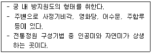
- 창경궁 퉁명전 옆의 연지
- 경복궁 후원의 향원지
- 창덕궁 후원의 부용지
- 창경궁 후원의 춘당지
(정답률: 67%)
9. 정원에서의 생활을 중요시하여 생전에는 정원에 정자 등 화려한 건물을 지어 친구들과 즐기다가 사후에는 그 곳을 그대로 묘소나 기념관으로 사용하였던 국가는?
- 무굴인도
- 페르시아
- 이탈리아
- 스페인
(정답률: 77%)
10. 이슬람권의 정원은 파라다이스(Paradise)의 개념을 갖는 정원이 대부분이다. 다음 이와 같은 성격으로 분류하기 어려운 정원은?
- 이졸라 벨라(lsola Bella)
- 샤리마르-바그(Shalimar Bagh)
- 헤네랄리페(Generalife)
- 타지마할(Taj Mahal)
(정답률: 66%)
11. 화목부(花木部)에 식물 특성과 함께 배식법을 다루고 있는 중국 명나라 때의 저술서는?
- 계성의 원야(園冶)
- 문진향의 장물지(長物志)
- 주밀의 오흥원림기(吳興園林記)
- 이도헌추리의 축산정조전(築山庭造傳)
(정답률: 56%)
12. 문헌상 우리나라의 정원에 식물인 연(連)이 최초로 나타난 시기는?
- 기원전 16년경
- 서기 123년경
- 서기 372서기
- 서기 600서기
(정답률: 61%)
13. 르 노트르 양식의 영향을 받은 오스트리아 정원 유적으로 옳은 것은?
- 쇤부룬성
- 샤블롱 정원
- 님펜부르크 성관
- 페트로드보레츠 궁전
(정답률: 63%)
14. 창경궁과 관련된 설명으로 틀린 것은?
- 낙선재 지역은 후궁들의 침전이었다.
- 동명전 옆에는 장대석을 쌓아올린 원형지당과 중앙에 부정형의 섬을 만들었다.
- 동궐도에 보면 큰 황새 조류나 동물, 해시계, 풍기(風旗) 등의 기물을 대석 뒤에 설치한 것이 보인다.
- 홍화문에서 명정문에 이르는 보도는 삼도로 중앙을 높게 해 단을 두고 박석을 깔았다ㅑ.
(정답률: 50%)
15. 불국사의 구품연지를 지나 대웅전으로 올라가는 청운교와 백운교에 33계단이 조성되었는데, 이 “33계단”의 상정적 의미는?
- 한국 사람이 좋아하는 행운의 숫자
- 입신공명과 부귀영화를 뛰어넘는 해탈
- 세속의 번외로 부산히 흩어 진 마음을 하나로 모아두는 시간
- 불교의 우주관인 수미산에서 33천(天)을 뛰어 넘어 부처의 세계로 나아감
(정답률: 81%)
16. 알베르티의 저서 “데 레 아에디피카토레(De re Aedificatoria)" 에서 제시한 정원의 입지 조건이 아닌 것은?
- 수원의 적절성을 확인한다.
- 배수가 잘되는 견고한 부지가 좋다.
- 부지의 방향은 태양과 이루는 수평ㆍ수직 각도를 고려한다.
- 도시로부터 조망이 좋고 시장이 형성되는 곳이 좋다.
(정답률: 71%)
17. 고려시대의 의종(毅宗)이 민가 50여구를 헐어 터를 다듬고 여기에 많은 정자를 세워 명화이과(名花異果)를 심었으며, 괴석으로 가산을 꾸미고 인공폭포를 만들었는데, 그 원렴은 치려(侈麗)하기 그지 없었다고 하였다. 이와 관련된 정자는?
- 만수정(萬壽亭)
- 양성정(養性亭)
- 중미정(衆美亭)
- 태평정(太平亭)
(정답률: 57%)
18. 다음 설명에 적합한 용어는?
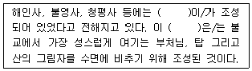
- 영지(影池)
- 연지(連池)
- 계담(漠睪)
- 귀루(署湯)
(정답률: 67%)
19. 다음 설명 중 “도산서원”과 가장 거리가 먼 것은?
- 사산오대(四山五臺)
- 연(造)을 식재한 애련설(愛蓮說)
- 매(梅), 죽(竹), 송(松), 국(菊)
- 정우당(淨友糖)과 몽천(夢泉)을 축조
(정답률: 56%)
20. 한국의 별서 양식의 발달에 배경이 되지 못하는 것은?
- 신라시대의 사절유택
- 조선시대 사화와 당행의 심화
- 우리나라의 아름다운 자연환경
- 무역을 통한 문물 교류의 확대
(정답률: 76%)
2과목: 조경계획
21. 도시 오픈스페이스의 주요 기능으로 거리가 먼 것은?
- 재해의 방지
- 미기후의 조절
- 도시 확산의 억제
- 토지이용율의제고
(정답률: 48%)
22. 주택건설기준 등에 관한 규정상 “근린생활시설”의 설명 중 ()안에 알맞은 기준값은?
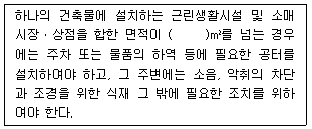
- 500
- 1000
- 2000
- 2500
(정답률: 63%)
23. 자연공원법의 “공원별 보전ㆍ관리계획의 수립 등”대한 설명 중 A, B에 적합한 값은?
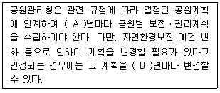
- A:10, B:5
- A:10, B:7
- A:15, B:5
- A:15, B:7
(정답률: 78%)
24. 대상 부지 분석의 목적이 아닌 것은?
- 부지계획의 목표 수립
- 부지의 문제점 도출
- 부지의 잠재력 파악
- 부지의 특성을 이해
(정답률: 61%)
25. 건물의 실내정원 배치계획 수립에서 고려해야 할 사항으로 옳지 않은 것은?
- 제한된 환경조건을 갖게 되며, 건물 내부의 환경 및 구조적 조건을 고려해야 한다.
- 일반적으로 식물의 생장에 필요한 습도의 제공 및 관수에 의한 수분공급이 필요하다.
- 위치 및 조경요소의 배치는 건물 내부의 전체적인 동선 흐름, 이용패턴, 내부공간의 성격 등을 고려한다.
- 정창(top-light)을 통한 실내 자연광 유입을 위해 남향에 배치하고, 빛을 좋아하고, 생장속도가 빠른 키 큰 식물을 식재한다.
(정답률: 78%)
26. 다음 중 놀이시설 계획과 관련된 용어 설명이 부적합한 것은?
- “개구부”란 시설물의 일부분이 구조체의 모서리나 면으로 둘러싸인 공간을 말한다.
- “안전거리”란 놀이시설 이용에 필요한 시설 주위의 보호자 관찰거리를 말한다.
- “최고 접근높이”란 정상적 또는 비정상적인 방법으로 어린이가 오를 수 있는 놀이시설의 가장 높은 높이를 말한다.
- “놀이공간”이란 어린이들의 신체단련 및 정신수양을 목적으로 설치하는 어린이놀이터ㆍ유아놀이터 등의 공간을 말한다.
(정답률: 57%)
27. 다음 설명에 적합한 계약은?
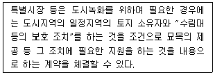
- 녹지계약
- 공지계약
- 생태공간계약
- 원상회복계약
(정답률: 73%)
28. 설문조사의 특성이 아닌 것은?
- 설문 작성을 위한 예비조사를 실시함이 바람직하다.
- 앞부분의 질문이 나중의 질문에 영향을 줄 수 있다.
- 표준화된 설문지를 여러 응답자에게 반복적으로 사용함으로써 여러 사람의 응답을 비교할 수 있다.
- 통계적 처리를 통하여 계량적 결론을 낼 수는 있으나 비계량적 결과보다 연구결과의 설득력이 약하다.
(정답률: 73%)
29. 다음의 설명에 해당하는 계획은?
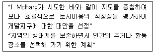
- 환경시설계획
- 심미적 환경계획
- 생태환경계획
- 환경자원관리계획
(정답률: 71%)
30. 다음 설명에 가장 적합한 용어는?
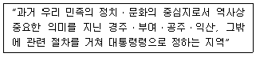
- 고도(古都)
- 침상원
- 비오톱(Biotop)
- 계획지역
(정답률: 70%)
31. 배수시설 계획 중 다음 설명의 배수는?
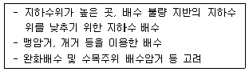
- 개거 배수
- 표면 배수
- 지표 배수
- 심토층 배수
(정답률: 62%)
32. 자연공원의 각 지구별 자연보존 요구도의 크기 순서를 옳게 나타낸 것은?
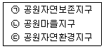
- ㉠＞㉡＞㉢
- ㉠＞㉢＞㉡
- ㉢＞㉠＞㉡
- ㉢＞㉡＞㉠
(정답률: 66%)
33. 도로를 기능적으로 구분할 때 다음 설명에 해당되는 것은?
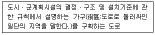
- 주간선도로
- 보조간선도로
- 집산도로
- 국지도로
(정답률: 50%)
34. 환경계획이나 설계의 패러다임 중 자연과 인간의 조화, 유기적이고 체계적 접근, 상호의존성, 직관적 통찰력 등을 특징으로 하는 패러다임은?
- 직관적 패러다임
- 데카르트적 패러다임
- 전체론적 패러다임
- 뉴어버니즘 패러다임
(정답률: 45%)
35. 산악형 국립공원지역 내 입지한 고찰(古刹) 지역을 관광지로 개발할 때 가장 중요하게 고려하여야 할 것은?
- 등산로와 종교 참배 동선의 연결
- 종교시설의 집단 설치를 위한 이주
- 관광객과 종교인들 간의 보행동선 공유
- 종교 및 문화재 보존과 관광 레크레이션 시설 사이에 완충지대 형성
(정답률: 73%)
36. 축척이 1/50000인 지형도의 어떤 사면경사를 알기 위해 측정한 계곡선 간의 수평 최단 거리가 1.4cm이었을 두 점의 사면 경사도는 약 얼마인가?
- 8%
- 10%
- 14%
- 20%
(정답률: 59%)
37. 주차장법상 주차장의 종류에 해당되지 않는 것은?
- 노상주차장
- 부설주차장
- 노외주차장
- 지하주차장
(정답률: 60%)
38. “체육시설의 설치ㆍ이용에 관한 법률”에서 공공체육시설로 분류되지 않는 것은?
- 생활체육시설
- 대중체육시설
- 전문체육시설
- 직장체육시설
(정답률: 47%)
39. 생태관광의 범위로 옳지 않은 것은?
- 지속가능한 환경친화적인 관광
- 농촌보다는 도시를 소규모 그룹으로 관광
- 관광지의 경관, 동식물, 문화유산을 고려하는 관광
- 훼손이 덜된 자연지역을 소규모 그룹으로 관광
(정답률: 76%)
40. 대상지역의 기후에 관한 조사는 계획구역이 속한 지역의 전반적인 기후에 관한 조사와 계획구역 내에 국한된 미기후에 관한 조사로 나누어진다. 다음 중 미기후에 관한 조사 사항이 아닌 것은?
- 강우량
- 태양열
- 공기유통
- 안개ㆍ서리 피해지역
(정답률: 59%)
3과목: 조경설계
41. 주차장법 시행규칙상의 “장애인전용”주차 단위 구획 기준은? (단, 평행주차형식 외의 경우를 적용한다.)
- 2.0m 이상 ×6.0m 이상
- 2.0m 이상 ×5.0m 이상
- 2.6m 이상 ×5.2m 이상
- 3.3m 이상 ×5.0m 이상
(정답률: 72%)
42. 다음 입체도를 3각법에 의해 3면도로 옳게 투상한 것은? (단, 화살표 방향을 정면으로 한다.)
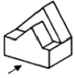
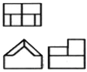
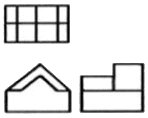
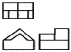
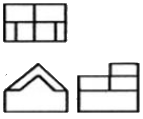
(정답률: 72%)
43. 가법혼합(Additive mixture)의 3색광에 대한 설명으로 틀린 것은?
- 빨간색광과 녹색광을 흰 스크린에 투영하여 혼합하면 밝은 노랑이 된다.
- 가법혼합은 가산혼합, 가법혼색, 색광혼합이라고 한다.
- 3색광 모두를 혼합하면 암회색(暗灰色)이 된다.
- 가법혼색의 방법에는 동시, 계시, 병치 3가지가 있다.
(정답률: 70%)
44. 제도 용지의 나비와 길이의 비가 옳은 것은?
- 1:1
- 1:√2
- 1:√3
- 1:2
(정답률: 66%)
45. 조경공간에서 경관조명시설의 설계 검토 사항으로 옳지 않은 것은?
- 하나의 설계대상 공간에 설치하는 경관조명 시설은 종류별로 규격ㆍ형태ㆍ재료에서 체계화를 꾀한다.
- 특정 집단의 집중적인 이용에 대비해 유지 관리가 전문화될 수 있도록 회로구성 등의 설계에 고려한다.
- 광장과 같은 공간의 어귀는 밝고 따뜻하면서 눈부심이 적은 조명으로 설계한다.
- 야간 이용의 활성화를 목적으로 설계하는 공원과 같은 공간에서는 야간 이용자들의 흥미유발이 중요하다.
(정답률: 51%)
46. 제이콥스와 웨이(Jacobs&Way)는 경관의 시각적 흡수력(Visual absorption)은 경관의 투과(Transparency)의 복잡도(Complexity)에 의해 좌우된다고 하였다. 시각적 흡수력이 가장 높은 것은?
- 투과성이 높고, 복잡도가 낮은 경우
- 투과성이 높고, 복잡도가 높은 경우
- 투과성이 낮고, 복잡도가 낮은 경우
- 투과성이 낮고, 복잡도가 높은 경우
(정답률: 47%)
47. 다음 그림은 도형조직의 원리 가운데에서 어느 것에 가장 적당한가?
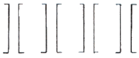
- 근접성
- 방향성
- 유사성
- 완결성
(정답률: 55%)
48. 다음 중 속도감이 가장 둔한 느낌의 색상은?
- 노랑
- 빨강
- 주황
- 청록
(정답률: 67%)
49. 다음 중 제도용 삼각자에 관한 설명으로 옳지 않은 것은?
- 조경 제도에는 30cm가 적합하다.
- 삼각자는 15° 증가되어 여러 각도를 얻을 수 있다.
- 자의 길이는 45° 빗면과 60°의 수선길이를 말한다.
- 삼각자는 30°와 60° 2가지가 한 세트로 되어 있다.
(정답률: 57%)
50. 장애인 등의 통행이 가능한 계단 그림에서 A와 B의 값이 모두 옳은 것은? (단, 장애인ㆍ노인 임산부 등의 편의증진 보장에 관한 법률 시행규칙을 적용한다.)
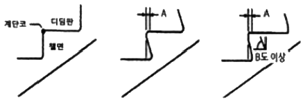
- A:3cm, B:45
- A:3cm, B:60
- A:5cm, B:50
- A:5cm, B:60
(정답률: 62%)
51. 해가 지면서 주위가 어두워지는 해 질 무렵 낮에 화사하게 보이던 빨간색 꽃은 어둡고 탁해 보이고, 연한 파란색 꽃들 초록색의 잎들은 밝게 보이는 현상은 무엇인가?
- 푸르키니에 현상
- 컬러드 셰도우 현상
- 베졸트-브뤼케 현상
- 헬슨-저드 효과
(정답률: 72%)
52. 도면에 사용하는 인출선에 대한 설명으로 틀린 것은?
- 치수선의 보조선이다.
- 가는 실선을 사용한다.
- 도면 내용물의 대상 자체에 기입할 수 없을 때 사용한다.
- 식재설계 시 수목명, 수량, 규격을 기입하기 위해 사용한다.
(정답률: 58%)
53. 다음 중 균형과 관계있는 용어로 가장 거리가 먼 것은?
- 대칭
- 점증
- 비대칭
- 주도와 종속
(정답률: 51%)
54. 사람이 눈을 통하여 외계의 사물을 볼 때 그 사물을 구성하고 있는 다음 시각요소들 중에서 어떤 것이 가장 빨리 지각되는가?
- 색채
- 형태
- 공간
- 질감
(정답률: 65%)
55. 도시경관과 자연경관에 대한 설명 중 틀린 것은?
- 일반적으로 자연경관이 도시경관에 비해 선호도가 높다.
- 도시경관의 복잡성은 자연경관의 복잡성보다 상대적으로 낮다.
- 자연경관이 도시경관에 비해 색채대비가 낮다.
- 자연경관은 도시경관에 비해 부드러운 질감을 가진다.
(정답률: 72%)
56. 좋은 디자인이 되기 위해 요구되는 조건으로 가장 거리가 먼 것은?
- 함목적성
- 대중성
- 심미성
- 경제성
(정답률: 39%)
57. 다음 중 운율미(韻律美)의 표현과 가장 관계가 먼 것은?
- 변화되는 색채
- 수관의 율동적인 선(線)
- 편평한 벽에 생긴 갈라진 틈
- 질정한 간격을 두고 들려오는 소리
(정답률: 69%)
58. 비탈면 녹화의 설계 시 고려사항으로 옳지 않은 것은?
- 비탈면 녹화는 인위적으로 깍기, 쌓기 된 비탈면과 자연침식으로 이루어진 비탈면을 생태적, 시각적으로 녹화하기 위한 일련의 행위를 말한다.
- 초본류 식재 방법에는 차폐수벽공법, 식생상심기, 새집공법, 새심기가 있다.
- 소단배수구를 계획하는 소단부에는 횡단구배를 두고, 배수구쪽으로 편구배를 두어 물이 비탈면으로 넘치지 못하도록 설계한다.
- 비탈면은 조사에서 토사 비탈면의 토양경도가 27mm 이상이면 암반 비탈면과 같이 취급한다.
(정답률: 47%)
59. 조경설계기준에서 정한 의자(벤치) 설계에 관한 설명으로 틀린 것은?
- 육지면으로부터 등받이 끝까지 전체 높이는 80~100cm를 기준으로 한다.
- 의자의 길이는 1인당 최소 45cm를 기준으로 하되, 팔걸이 부분의 폭은 제외한다.
- 앉음판의 높이는 약 34~46cm를 기준으로 하되 어린이용 의자는 낮게 할 수 있다.
- 등받이 각도는 수평 면을 기준으로 95~110°를 기준으로하고, 휴식시간이 길어질수록 등받이 각도를 크게 한다.
(정답률: 56%)
60. 다음 재료 구조 표시 시호(단면용)에 해당하는 것은?
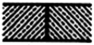
- 지반
- 석재
- 인조석
- 잡석다짐
(정답률: 60%)
4과목: 조경식재
61. 다음 특징에 해당하는 수종은?
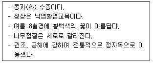
- 쥐똥나무(Ligustrum obtusifolium)
- 귀룽나무(Prunus padus)
- 능수버들(Salix pseudolasiogyne)
- 회화나무(Sophora japonica)
(정답률: 56%)
62. 개체군 분포에서 Allee의 원리가 뜻하는 것은?
- 어떤 개채군은 불규칙적으로 분포한다.
- 어떤 개채군 분포는 집단화가 유리하다.
- 어떤 개채군은 개체 내 경쟁이 개체간보다 치열하다.
- 어떤 개체군은 미환경의 특성에 따라 분포한다.
(정답률: 48%)
63. 다음 중 자생지가 우리나에서는 울릉도는 한정된 수종은?
- 무화과나무(Ficus carica L.)
- 신갈나무(Quercus mongolica Fisch. ex Ledeb.
- 당단풍나무(Acer pseudosieboldianum Kom.)
- 너도밤나무(Fagus engoeriana Seemen ex Diels)
(정답률: 64%)
64. 다음 식물 중 상록활엽수에 해당되는 것은?
- 목련(Magnolia kobus)
- 함박꽃나무(Magnolia sieboldll)
- 태산목(Magnolia grandiflora)
- 일본목련(Magnolia obvata)
(정답률: 64%)
65. 다음 협죽도과(科, Apocynaceae)의 수종은?
- 목서(Ospanthus fragrans)
- 좀작살나무(Callicarpa dichotoma)
- 마삭줄(Trachelospermum asiaticum)
- 치자나무(Gardenia jasminoides)
(정답률: 57%)
66. 식물체를 지탱시키며, 뿌리에 산소를 공급하는 토양단면상의 집적층을 나타내는 기호는?
- A층
- B층
- C층
- D층
(정답률: 54%)
67. 조경설계기준에 제시된 비탈 경사면(法面) 피복용 식물이 갖추어야 할 조건으로 가장 거리가 먼 것은?
- 비탈면의 자연식생 천이 방해
- 주변 식상과의 생태적ㆍ경관적 조화
- 우수한 종바발아율과 폭넓은 생육 적응성
- 목본류는 내건성, 내열성, 내한성 조건을 고루 만족
(정답률: 67%)
68. 다음 중 같은 속(屬)에 속하는 수종으로만 구성된 것은?
- 밤나무, 너도밤나무, 나도밤나무
- 상수리나무, 신갈나무, 굴참나무
- 족제비싸리, 조록싸이, 꽃싸리
- 오동나무, 벽오동, 개오동
(정답률: 64%)
69. 영국 윌리암 로빈슨이 제창한 야생원과 같은 목가적인 전원풍경을 그대로 재현시키는 실재 기법은?
- 무늬식재
- 군락식재
- 자유식재
- 자연풍경식식재
(정답률: 67%)
70. 수목이식시 표준 뿌리분의 크기를 결정하는 일반적 기준은?
- 근원직경×3
- 근원직경×4
- 근원직경×5
- 근원직경×6
(정답률: 58%)
71. 조경 식재 설계에서 질감(texture)의 설명으로 옳지 않은 것은?
- 거친 질감에서 부드러운 질감으로의 점진적인 사용은 식재설계에서 바람직하지 않다.
- 떨어진 거리에서 보았을 때 질감은 식물 전체에 대한 빛과 음영의 효과로 나타난다.
- 가까이에서 보았을 때 질감은 계절을 통하여 잎, 가지의 크기와 표면, 밀도 등에 따라서 결정된다.
- 식물개체의 물리적 특성과 빛이 식물에 비추는 상태, 식물이 보이는 거리 등은 식물개체의 질감을 결정한다.
(정답률: 66%)
72. 아황산가스에 약한 수종은?
- 은행나무
- 가이즈까향나무
- 독일가문비
- 동백나무
(정답률: 48%)
73. 다음 중 자웅이주이기 때문에 암그루와 숫그루를 함께 심어야 열매를 봇 수 있는 수종으로만 나열된 것은?
- 계수나무, 해당화
- 먼나무, 산딸나무
- 낙상홍, 보리수나무
- 소철, 은행나무
(정답률: 59%)
74. 다음 중 무궁화의 학명으로 맞는 것은?
- Lagerstroemia indica
- Cornus controversa
- Cedrus deodara
- Hibscus syriacus
(정답률: 66%)
75. 식재방법을 기능별로 분류하면 공간조절, 경관조절, 환경조절로 구분할 수 있다. 이 중 공간을 조절하기 위한 식재방법은?
- 지표식재
- 경관식재
- 녹음식재
- 경계
(정답률: 60%)
76. 다음 중 황색 열매가 익어 달리는 수종은?
- 치자나무(Gardenia jasmihoides Ellis)
- 매자나무(Berberis koreana Palib)
- 식나무(Aucuba japonica Thunb)
- 작살나무(Callcarpa japonica Thunb)
(정답률: 49%)
77. 다음 중 생태계 교란 생물(식물)이 아닌 것은? (문제 오류로 가답안 발표시 4번으로 발표되었지만 확정답안 발표시 모두 정답처리 되었습니다. 여기서는 가답안인 4번을 누르면 정답 처리 됩니다.)
- 갯줄풀(Spartina alterniflora)
- 단풍잎돼지풀(Ambrosia trifda)
- 양미역취(Solidago altissima)
- 환산덩굴(Humulus japonicus)
(정답률: 67%)
78. 자연식생의 군락조사 방법으로 가장 부적합한 것은?
- 모든 방형구의 크기는 5×5m 정도가 일반적이다.
- 방위ㆍ경사 등의 입지조건을 기재한다.
- 식생계층은 교목층, 아교목층, 관목층, 초본층으로 구분하여 기록한다.
- 각 계층별로 모든 출현종의 우점도와 군도를 기록한다.
(정답률: 57%)
79. 다음 중 비료목(肥料木) 으로 분류하기 가장 어려운 수종은?
- 소나무
- 오리나무
- 싸리나무
- 아까시나무
(정답률: 60%)
80. 식재로 얻을 수 있는 대표적인 기능 중 “공학적 이용”을 통해서 얻을 수 있는 식물의 효과에 해당하는 것은?
- 대기의 정화작용
- 사생활 보호
- 조류 및 소동물 유인
- 구조물의 유화
(정답률: 59%)
5과목: 조경시공구조학
81. 조경시공분야와 관련된 POE(Post Occupancy Evaluation)란?
- 품질관리기법의 일종으로 불량품처리와 재발을 방지하는 것
- 시공으로 인한 환경적 영향을 사전에 평가하는 기법
- 설계자와 시공자의 입장을 충분히 고려하여 설계하는 기법
- 시공 후 평가 또는 이용 후 평가
(정답률: 60%)
82. 토압에 대한 설명 중 틀린 것은?
- 토압이 작용하지 않는 옹벽은 구조적으로 담과 같은 구조물이다.
- 옹벽의 뒷채움 흙을 다지더라도 토압은 크게 변화하지 않는다.
- 토압의 크기는 토질, 함수량 등에 따라 달라지게 된다.
- 옹벽과 같은 구조물에 작용하는 흙의 압력이 토압이다.
(정답률: 66%)
83. 건물 외벽에 그림과 같은 철봉을 박고 그 끝에 화분을 걸었다. 이 때 발생하는 휨모멘트의 해석도는?
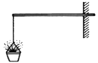
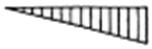
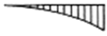
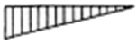
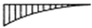
(정답률: 40%)
84. 다음 중 순공사비의 구성 항목이 아닌 것은?
- 경비
- 재료비
- 노무비
- 일반관리비
(정답률: 60%)
85. 다음 중 구조물을 역학적으로 해석하고 설계하는데 있어, 우선적으로 산정해야 하는 것은?
- 구조물에 작용하는 하중 산정
- 구조물에 작용하는 외응력 산정
- 구조물에 발생하는 반력 산정
- 구조물 단면에 발생하는 내응력 산정
(정답률: 68%)
86. 그림과 같을 때의 표고 Hb는? (단, n=11.5, D=40m, S=1.50m, l=1.10m, Ha=25.85)
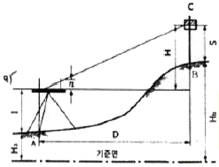
- 31.20m
- 32.20m
- 30.⑤m
- 31.⑤m
(정답률: 35%)
87. 다음의 단순보에서 A점의 반력 이 B점의 반력의 3배가 되기 위한 거리 x는 얼마인가?
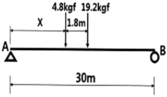
- 3.75m
- 5.04m
- 6.06m
- 6.66m
(정답률: 39%)
88. 15ton 차륜식 불도저를 이용하여 60m 지점에 굴착토를 운반하여 사토하려 할 때 1회 왕복시간은 얼마인가? (단 전진속도 80m/분, 후진속도 100m/분, 기어변속시간 0.25분이다.)
- 3.24분
- 2.95분
- 1.60분
- 0.91분
(정답률: 47%)
89. 다음 공식에서 A가 의미하는 것은?
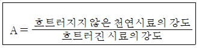
- 예민비
- 간극비
- 함수비
- 포화도
(정답률: 55%)
90. 다음 그림에 관한 설명 중 틀린 것은?
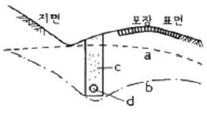
- 차단배수시설이다.
- d는 콘크리트 무공관이다.
- a는 초기, b는 변경된 지하수위이다.
- c는 굵은 모래나 모래가 섞인 강자갈이 좋다.
(정답률: 50%)
91. 소(小)운반(運搬)에 대한 설명으로 옳은 것은? (단, 건설공사 표준품셈의 기준을 적용한다.)
- 인력을 이용하는 목도운반을 소운반이라 한다.
- 소운반의 거리는 50m 이내의 거리를 말한다.
- 경사면의 소운반 거리는 수직고 1m를 수평 거리 6m의 비율로 계상한다.
- 소운반로가 비포장일 경우 비용을 50% 할중 계상한다.
(정답률: 46%)
92. 다음 중 금속부식을 최소화하기 위한 방법에 대한 설명 중 옳지 않은 것은?
- 부분적으로 녹이 나면 즉시 제거한다.
- 표면을 평활하고 깨끗이 하며 가능한 한 건조한 상태를 유지한다.
- 가능한 한 이종금속을 인접 또는 접촉시키지 않는다.
- 콘 변형을 준 것은 가능한 한 담금질하여 사용한다.
(정답률: 62%)
93. 콘크리트 타설시 거푸집에 작용하는 측압이 큰 경우에 해당되지 않는 것은?
- 거푸집 부재단면이 클수록
- 콘크리트의 비중이 작을수록
- 콘크리트의 슬럼프가 클수록
- 외기온도가 낮을수록
(정답률: 52%)
94. 다음에 설명하는 특징을 갖는 조명등은?
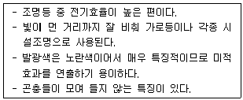
- 할로겐등
- 크세논램프
- 고압나트륨등
- 메탈할라이드등
(정답률: 59%)
95. 다음 건설재료 중 단위 m3당 중량(重量)이 가장 큰 것은?
- 철근콘크리트
- 화강암
- 자갈(건조)
- 목재(생송재)
(정답률: 59%)
96. 다음 네트워크 공정표에서 전체 공정을 마치는데 소요되는 최장 기간(CP)은?
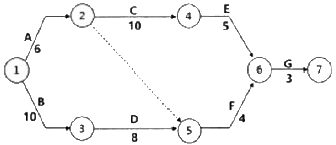
- 23일
- 24일
- 25일
- 26일
(정답률: 63%)
97. 감리원에 대한 설명이 틀린 것은?
- 현장대리인이 감리원을 선정한다.
- 그 공사에 대하여 전문적인 기술자를 선정한다.
- 감리원은 설계도대로 시공되지 않았을 때는 수급인에게 시정을 요구한다.
- 감리원은 발주자의 자문에 응하고 기술적으로 설계서대로의 시공여부를 확인한다.
(정답률: 64%)
98. 보통 포틀랜드 시멘트(평균기온 20℃ 이상)을 사용한 경우 거푸집널의 애체 시기(기초, 보, 기둥 및 벽의 측면)로 옳은 것은? (단, 압축강도를 시험하지 않을 경우)(문제 오류로 가답안 발표시 4번으로 발표되었지만 확정답안 발표시 3번이 정답처리 되었습니다. 여기서는 확정답안인 3번을 누르면 정답 처리 됩니다.)
- 1일
- 2일
- 3일
- 4일
(정답률: 61%)
99. 15분 동안에 15mm의 비가 내렸을 때, 이것을 평균강우강도(mm/hr)로 환산할 경우 맞는 것은?
- 1
- 30
- 60
- 90
(정답률: 62%)
100. 다음 중 고사식물의 하자보수 면제 대상에 해당되지 않는 것은?
- 폭풍 등에 준하는 사태
- 천재지변과 이의 여파에 의한 경우
- 인위적인 원인(생활 활동에 의한 손상등)으로 인한 고사
- 유지관리비용을 지급받은 준공 후 상태에서 가뭄 등에 의한 고사
(정답률: 56%)
6과목: 조경관리론
101. 비탈면의 풍화 및 침식 등의 방지를 주목적으로 하며, 1:1.0 이상의 완구배로서 접착력이 없는 토양, 식생이 곤란한 풍화토, 점토 등의 경우에 실시하는 비탈면의 보호공은?
- 콘크리트판 설치공
- 돌붙임 및 블록붙임공
- 콘크리트 격자형 블록 및 심줄박기공
- 시멘트 모르타르 및 콘크리트 뿜어붙이기공
(정답률: 35%)
102. 미국흰불나방은 북아메리카가 원산지이다. 우리 나라에 최초로 피해를 나타낸 시기는?
- 1948년 전후
- 1958년 전후
- 1968년 전후
- 1978년 전후
(정답률: 49%)
103. 토양으로부터 입경분석을 하고, 그리고 입경의 분포비에 의해서 토성(Soil trxture)을 결정하게 된다. 이 일련의 과정과 관계가 없는 것은?
- 삼각도표법
- 스톡스(Stokes) 법칙
- 토양의 양이온치환욜량
- Sodium hexametaphosphate
(정답률: 44%)
104. 살분법(殺紛法)에 이용되는 분제가 갖추어야 할 물리적 성질로서 가장 거리가 먼 것은?
- 분산성
- 비산성
- 안정성
- 현수성
(정답률: 46%)
1⑤. 콘크리트 재료 시설물의 균열을 줄이기 위한 대책으로 적당하지 않은 것은?
- 양생방법에 주의한다.
- 수축 이음부를 설치한다.
- 단위 시멘트량을 적게 한다.
- 수화열이 높은 시멘트를 선택한다.
(정답률: 48%)
106. 관리업무 중에 위탁하는 것이 유리한 것은?
- 긴급한 대응이 필요한 업무
- 규정량적이고 정기적인 관리업무
- 관리취지가 명확해야 하는 업무
- 이용자에게 양질의 서비스가 가능한 업무
(정답률: 55%)
107. 다음 보기에서 설명하는 제초제는?
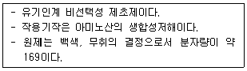
- 파라코(Paraquat)
- 글리포세이트(Glyphosate)
- 시노설프론(Cinosnlfuron)
- 프렐리라클로로(Pretilachlor)
(정답률: 60%)
108. 다음 설명의 A와 B의 들어갈 적합한 용어는?
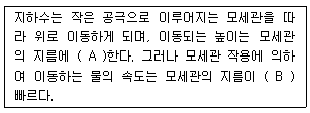
- A:비례, B:클수록
- A:반비례, B:클수록
- A:비례, B:작을수록
- A:반비례, B:작을수록
(정답률: 42%)
109. 비료의 화학적 반응적 관한 설명으로 틀린 것은?
- 과인산석회는 산성비료이다.
- 비료의 수용액 고유의 반응을 말한다.
- 화학적으로 중성인 비료는 사용 후 식물의 흡수 후에도 그 반응은 변화되지 않는다.
- 식물이 뿌리로부터 양분을 흡수하는 것은 그 양분이 가용성(可溶性)이어야 한다.
(정답률: 54%)
110. 네트워크에 의한 공정계획 수법 중 자원의 평준화의 목적에 해당하지 않는 것은?
- 유휴시간을 줄일 것
- 일일 동원자원을 최대로 할 것
- 공기내에 자원을 균등하게 할 것
- 소요자원의 급격한 변동을 줄일 것
(정답률: 59%)
111. 공정관리 곡선 작성중 아래 표에서와 같이 실시 공정 곡선에 예정 공정 곡선에 대래 항상 안전범위 안에 있도록 예정곡선(계획선)의 상하에 그리는 허용한계선을 일컫는 명칭은?
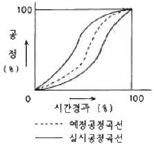
- S-curve
- progressive curve
- banana curve
- net curve
(정답률: 58%)
112. 조경관리에 활용되는 사다리의 넘어짐(전도) 방지에 대한 설명으로 틀린 것은?
- 이동식 사다라의 길이가 6m를 초과하는 것을 사용하지 않도록 한다.
- 기대는 사다리의 설치각도는 수평면에 대하여 75° 이하를 유지해야 한다.
- 계단식 사다리 (A자형)는 잠금장치를 확실하게 사용하고, 접은 채로 사용하지 않아야 한다.
- 기대는 사다리(일자형)를 설치할 때는 사다리의 상단이 걸쳐 놓은 지점으부터 30cm정도 올라가게 설치한다.
(정답률: 49%)
113. 횡선식공정표로서 각 작업의 완료시점을 100%로 하여 가로축에 그 진행도를 표현하는 것은?
- GANNT Chart
- PERT 기법
- CPM 기법
- 기열식 공정표
(정답률: 47%)
114. 과석, 종과석과 같은 가용성 인산비료에 석회질 비료를 함께 배합할 경우 비효가 감소하는 원인 물질에 해당하는 것은?
- 규산석회
- 인산3칼슘
- 질소
- 염화칼륨
(정답률: 41%)
115. 수목의 수간 외과수술의 과정이 옳은 것은?
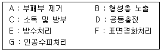
- A→B→C→D→E→F→G
- A→F→E→D→C→B→G
- A→F→B→C→E→D→G
- A→D→C→E→B→F→G
(정답률: 59%)
116. 공원관리에 있어서 안전대책에 관한 사항으로 틀린 것은?
- 사고 후의 처리 문제는 안전대책에서 제외시킨다.
- 시설의 설치 시 시설의 구조, 재질, 배치 등이 안전한가에 주의해야 한다.
- 시설을 설치한 후에도 이용방법, 이동빈도 등 이용 상황을 관찰하도록 한다.
- 이용자, 보호자의 부주의에서 생기는 사고의 경우에는 시설의 개량, 안내판에 의한 지도가 필요하다.
(정답률: 69%)
117. 포플러류 잎의 뒷면에 초여름부터 오랜지색의 작은 가루덩이가 생기고, 정상적인 나무보다 먼저 낙엽이 지는 현상이 나타나는 병은?
- 갈반병
- 잎녹병
- 잎마름병
- 점무늬잎떨림병
(정답률: 42%)
118. 토양 부식(腐植, humus)의 기능으로 틀린 것은?
- 지온을 상승시킨다.
- 공극률을 증가시킨다.
- 유효인산의 고정을 증가시킨다.
- 양이온치환용량을 증가시킨다.
(정답률: 43%)
119. 곤충의 외분비물질로 특히 개척자가 새로운 기주를 찾았다고 동족을 불러들이는데 사용되는 종내 통신물질로 나무종류에서 발달되어 있는 물질은?
- 집합 페로몬
- 경보 페로몬
- 길잡이 페로몬
- 성 페로몬
(정답률: 52%)
120. 실내조경용 식물의 인공토양에 해당되지 않는 것은?
- 질석
- 펄라이트
- 피트모스
- 사질양토
(정답률: 56%)